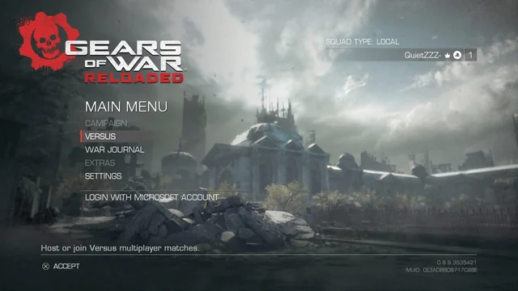
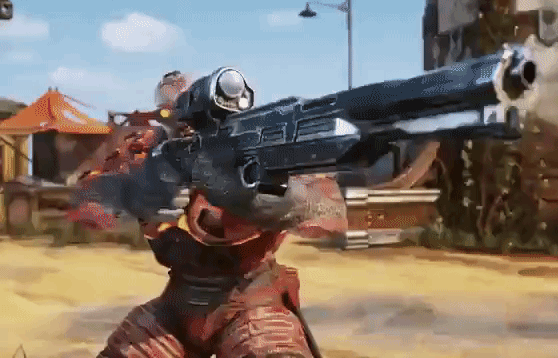
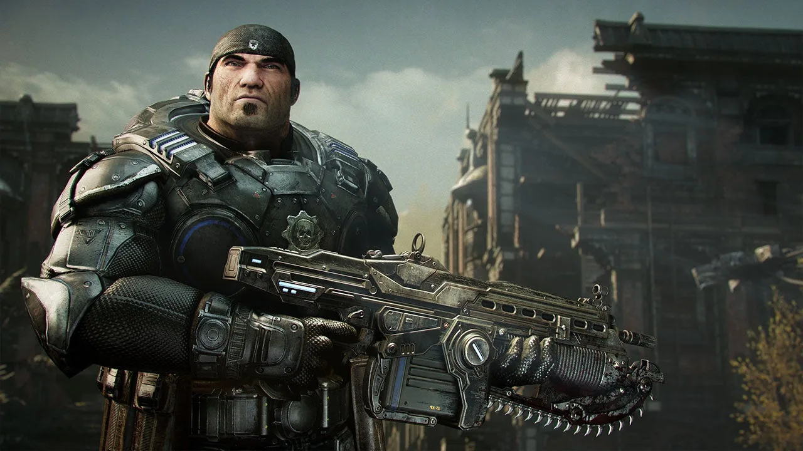

Gears of War Reloaded
Voltar para Seleção do Game
 |
 |
 |
 |
Desenvolvedora: The Coalition, Sumo Digital e Disbelief LLC
Plataforma: PS5, PC e Xbox Series S/X
Ano de Lançamento: 2025
Sinopse: Gears of War: Reloaded é a versão remasterizada definitiva do clássico jogo de tiro em terceira pessoa, focando na luta de Marcus Fenix e o Esquadrão Delta contra a horda Locust 14 anos após o "Dia da Emergência". A trama envolve sobrevivência, resgatando a humanidade em ruínas no planeta Sera com gráficos 4K/120FPS, campanha co-op e conteúdos extras inclusos.